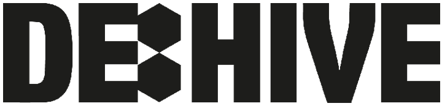

ANIMOD


Abstract
A Modularization, Modification and Transfer system for humanoid animations via Inverse Kinematics in the Unity Engine, based on Alexander Bereznyak’s and Michael Buttner’s IK Rig System System Concept.
Details
Production
10/2020 - 06/2021
Time
8 months
Engine
Unity
| Production | 10/2020 - 06/2021 |
| Time | 8 months |
| Engine | Unity |
Description
3D animations of humanoid characters in digital games have to satisfy
a great amount of requirements regarding both their visual fidelity and
integration into the game context. As such, authoring unique animations
for a large cast of characters creates an unfeasible spike in production
cost, regardless of whether this process involves motion capture or not.
A common solution to this problem is to have these characters share the
same underlying skeletal structure and proportions. This ensures that
any animation created for one of those actors can be applied to all of
their rigs without needing to worry about any undesirable or implausible
inconsistencies in the characters’ motions.
While this workflow represents a viable approach to the animation
process in the context of large productions, it inevitably causes a lack of
individuality regarding characters’ body types, as well as a discrepancy
between their unique personalities and styles of motion.
Animation Retargeting can alleviate some of these concerns by
transferring motion from one humanoid rig to other differently
proportioned ones. However, because it basically just copies motions
executed by one rig to another, it does not account for any kinds of
differences in the style of the motion itself.
By utilizing Inverse Kinematics and other animation constraints, Animod
aims to provide a procedural animation approach that is capable of both
retargeting and runtime modification of humanoid animations in the Unity
Game Engine, based on the IK Rig System concept pioneered by
Alexander Bereznyak and Michael Buttner.
Animation Modularization and Transfer

Animod is capable of unbinding the motion defined in an Animation Clip from the
Bone Rig Structure that the Clip requires to animate properly.
This motion is stored as a new Animation Clip containing collections of
parameters which pertain to certain parts of the Bone Rig, i.e. there is
one set of parameters for each leg, one for the spine, one for each arm, etc.
Using a proper setup of Animod's Motion Constraints and the Animation post-processing
capabilities of Unity's Animation Rigging package, it is possible to apply the
extracted motion to Bone Rigs of differing structure.
The actual bone animation is handled by IK Solver Constraints, which use target
Transforms set by the Motion Constraints to accomodate bone chains of desired link lengths.

Animation Modification
The data stored in Motion Clips can be processed by Animod
Modification Constraints before the motion is applied to the Bone Rig.
This functionality can be used to infuse the resulting Animation with
character-specific nuances or to yield entirely new poses without the need for additional
Animation Clips.
The Modification process is non-destructive and can be used to author new Animations
within the Game Engine as well as modify Animations during runtime in order to dynamically
adapt them to gameplay needs.
Learnings
- Coding Rigging Constraints with C# Jobs
- IK Solver Coding
- Unity Editor Scripting
- Working with Unity Avatars and Retargeting
Credits
Special Thanks to my coach in this endeavor
Prof. Jan Berger
